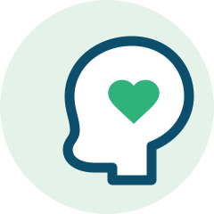
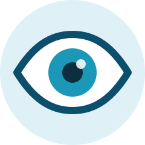

Bem-vindo à Clínica Vida Plena
Somos uma clínica multiespecialidades no coração de São Paulo, reunindo clínica geral, psicologia, pediatria e oftalmologia em um só lugar. Atendemos toda a família, do primeiro check-up ao acompanhamento contínuo.
Desde 2008, a Vida Plena atende moradores da região da Avenida Paulista com uma proposta simples: cuidado próximo e sem pressa. Nossas consultas têm tempo mínimo de 30 minutos, porque acreditamos que ouvir bem é o primeiro passo para tratar bem.
Nossas especialidades
- Clínica geral Check-ups e acompanhamento
-

Psicologia Terapia individual e familiar - Pediatria Do recém-nascido ao adolescente
-

Oftalmologia Exames de vista e receitas
Por que escolher a Vida Plena
- Consultas de 30 minutos — tempo real para conversar sobre o seu caso.
- Agendamento no mesmo dia para urgências de clínica geral.
- Prontuário integrado entre as quatro especialidades.
- Plantão em feriados para clínica geral e psicologia.
Um recado de boas-vindas
Ouça a trilha que toca na nossa recepção enquanto você espera pela consulta:
Trilha Down the Way, de Jason Shaw (music by audionautix.com), licença CC BY 3.0.
Agende sua consulta
Ligue para (11) 5555-1234, chame no WhatsApp ou use o formulário da página de contato. Confira antes os horários de atendimento de cada especialidade.